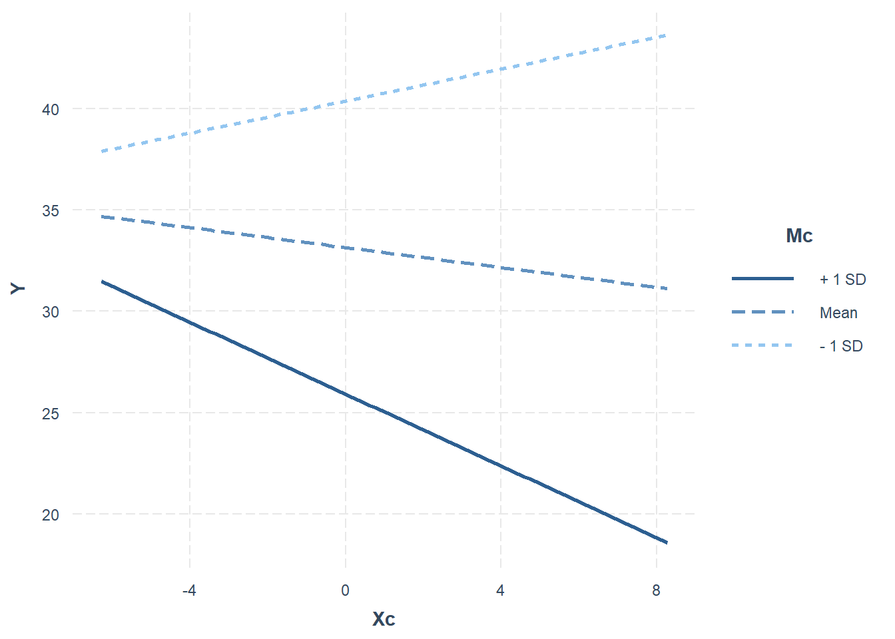
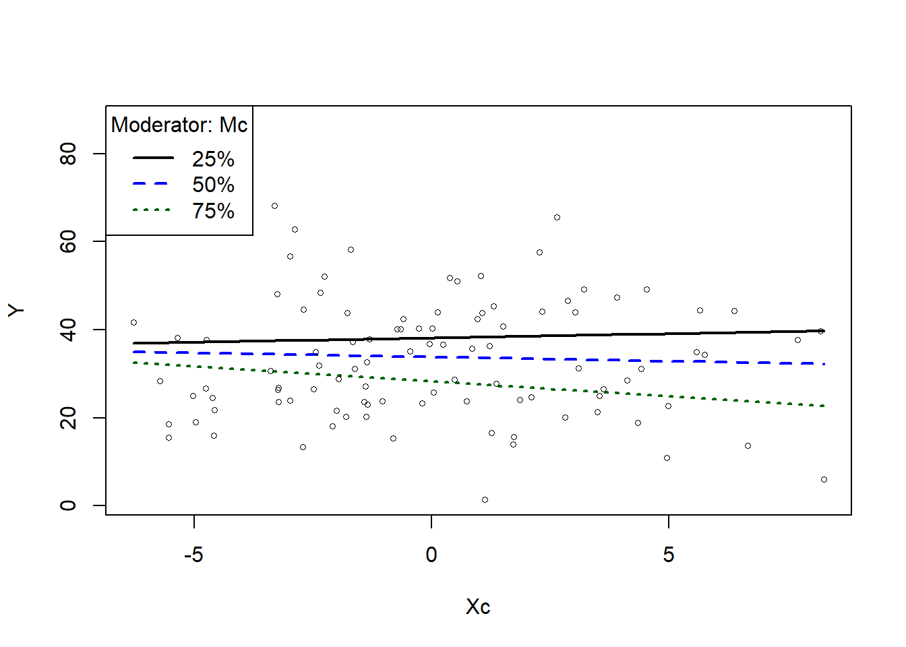
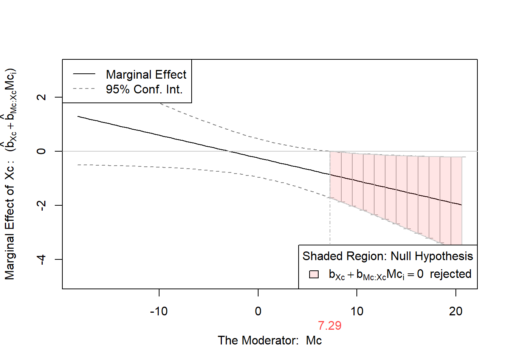
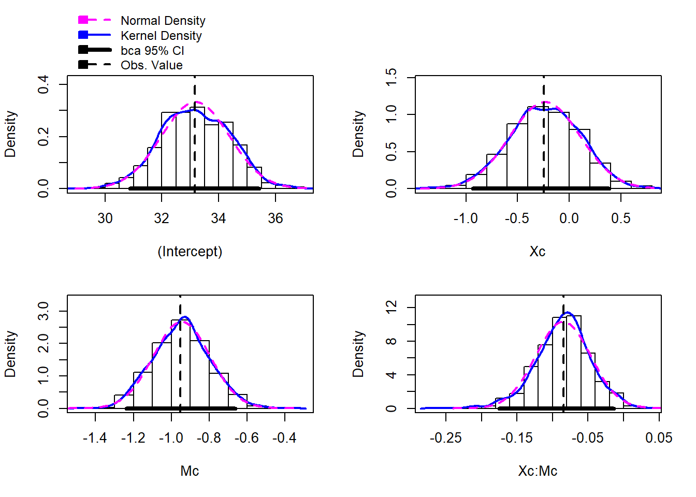

Topic 11 Moderation analysis
11.1 Overview
- What is moderation?
- Moderation analysis in more detail
- Grand Mean Centering
- Checking Assumptions
- Interpreting Moderation
- Bootstrapping Moderation
11.2 What is moderation?
There is a direct relationship between X and Y but it is affected by a moderator (M)
In the above model, we theorise that socio-economic status predicts future prospects but the strength of the relationship is changed by education level
11.3 What packages do we need?
- gvlma (for checking assumptions)
- interactions (for generating interaction plot)
- Rockchalk (for testing simple slopes)
- car (includes a Boot() function to bootstrap regression models )
11.4 What is moderation?
- The relationship between a predictor (X) and outcome (Y) is affected by another variable (M)
- This is referred to as an interaction (similar to interaction in standard regression)
- A moderator can effect the direction and/or strength of a relationship between X and Y
Here we might find that the relationship between SES and employment prospects is strong for those who do not spend a lot of time in education and weak for those who spend a lot of time in education.
Very similar to multiple regression
lm(Y ~ X + M + X*M)
Moderation analysis includes X, Z and the interaction between X and Z
If we find a moderation effect it becomes the focus of our analysis (the independent role of X and Z becomes less important)
## Warning: package 'interactions' was built under R version 4.0.2
In the plot above:
- The blue line is the “standard” regression line
- The black line is when the moderator is “low” (-1sd)
- The dotted line is when the moderator is “high” (+1sd)
11.5 Moderation: step-by-step
11.5.1 Step 1: Grand Mean Centering
- Regression coefficients (b values) are based on predicting Y when X = 0
- Not all measures actually have a zero value
- To make results easier to interpret, we can centre our data around the grand mean of the data (making the mean 0)
- The mean of the full sample is subtracted from the value
- This is similar to z-score (i.e. a standardised score)
To do this in R, we can use the scale() function:
Xc <- scale(X, center=TRUE, scale=FALSE) #Centering X;
Mc <- scale(M, center=TRUE, scale=FALSE) #Centering M;We then use the centred data in our analysis
We can see that the difference between the original data is the mean of the data.
## [1] 3.7580974 5.0792900 12.2348333 6.2820336 6.5171509 12.8602599 7.8436648 0.9397551
## [9] 3.2525886 4.2173521 10.8963272 7.4392553 7.6030858 6.4427309 3.7766355 13.1476525
## [17] 7.9914019 1.8664686 8.8054236 4.1088344 1.7287052 5.1281003 1.8959822 3.0844351
## [25] 3.4998429 0.7467732 9.3511482 6.6134925 1.4474523 11.0152597 7.7058569 4.8197141
## [33] 9.5805026 9.5125340 9.2863243 8.7545610 8.2156706 5.7523532 4.7761493 4.4781160
## [41] 3.2211721 5.1683309 0.9384146 14.6758239 10.8318480 1.5075657 4.3884607 4.1333786
## [49] 9.1198605 5.6665237 7.0132741 5.8858130 5.8285182 11.4744091 5.0969161 12.0658824
## [57] 0.1950112 8.3384550 6.4954170 6.8637663 7.5185579 3.9907062 4.6671705 1.9256985
## [65] 1.7128351 7.2141146 7.7928391 6.2120169 9.6890699 14.2003387 4.0358753 3.2366755
## [73] 10.0229541 3.1631969 3.2479655 10.1022855 4.8609080 1.1171292 6.7252139 5.4444346
## [81] 6.0230567 7.5411216 4.5173599 8.5775062 5.1180538 7.3271279 10.3873561 7.7407260
## [89] 4.6962737 10.5952305 9.9740154 8.1935878 6.9549269 3.4883757 11.4426098 3.5989617
## [97] 14.7493320 12.1304425 5.0571986 1.8943164## [,1]
## [1,] -2.72442479
## [2,] -1.40323216
## [3,] 5.75231105
## [4,] -0.20048864
## [5,] 0.03462873
## [6,] 6.37773774## [1] 6.482522## [1] 6.48252211.5.2 Step 2: Check assumptions
We can use the gvlma function to check regression assumptions
##
## Call:
## lm(formula = Y ~ Xc + Mc + Xc * Mc, data = Moddata)
##
## Coefficients:
## (Intercept) Xc Mc Xc:Mc
## 33.15071 -0.24574 -0.95207 -0.08425
##
##
## ASSESSMENT OF THE LINEAR MODEL ASSUMPTIONS
## USING THE GLOBAL TEST ON 4 DEGREES-OF-FREEDOM:
## Level of Significance = 0.05
##
## Call:
## gvlma(x = fitMod)
##
## Value p-value Decision
## Global Stat 16.25835 0.002691 Assumptions NOT satisfied!
## Skewness 9.69478 0.001848 Assumptions NOT satisfied!
## Kurtosis 6.42028 0.011282 Assumptions NOT satisfied!
## Link Function 0.01433 0.904712 Assumptions acceptable.
## Heteroscedasticity 0.12895 0.719519 Assumptions acceptable.The data looks skewed, we should transform it or perhaps use bootstrapping
11.5.3 Step 3: Moderation Analysis
##
## Call:
## lm(formula = Y ~ Xc + Mc + Xc * Mc, data = Moddata)
##
## Residuals:
## Min 1Q Median 3Q Max
## -22.193 -8.184 -0.445 5.670 44.161
##
## Coefficients:
## Estimate Std. Error t value Pr(>|t|)
## (Intercept) 33.15071 1.20186 27.583 < 2e-16 ***
## Xc -0.24574 0.35732 -0.688 0.4933
## Mc -0.95207 0.15921 -5.980 3.81e-08 ***
## Xc:Mc -0.08425 0.04236 -1.989 0.0496 *
## ---
## Signif. codes: 0 '***' 0.001 '**' 0.01 '*' 0.05 '.' 0.1 ' ' 1
##
## Residual standard error: 11.93 on 96 degrees of freedom
## Multiple R-squared: 0.2909, Adjusted R-squared: 0.2687
## F-statistic: 13.13 on 3 and 96 DF, p-value: 2.97e-07The results above show that there is a moderated effect
11.5.3.1 Visualising the moderation effect
We use an approach called simple slopes to visualise the moderation effect
interact_plot(fitMod, pred = Xc, modx = Mc)

The rockchalk package includes useful functions for visualising simple slopes
## Warning: package 'rockchalk' was built under R version 4.0.2##
## Attaching package: 'rockchalk'## The following object is masked from 'package:MASS':
##
## mvrnorm## The following object is masked from 'package:dplyr':
##
## summarize##
## Call:
## lm(formula = Y ~ Xc + Mc + Xc * Mc, data = Moddata)
##
## Residuals:
## Min 1Q Median 3Q Max
## -22.193 -8.184 -0.445 5.670 44.161
##
## Coefficients:
## Estimate Std. Error t value Pr(>|t|)
## (Intercept) 33.15071 1.20186 27.583 < 2e-16 ***
## Xc -0.24574 0.35732 -0.688 0.4933
## Mc -0.95207 0.15921 -5.980 3.81e-08 ***
## Xc:Mc -0.08425 0.04236 -1.989 0.0496 *
## ---
## Signif. codes: 0 '***' 0.001 '**' 0.01 '*' 0.05 '.' 0.1 ' ' 1
##
## Residual standard error: 11.93 on 96 degrees of freedom
## Multiple R-squared: 0.2909, Adjusted R-squared: 0.2687
## F-statistic: 13.13 on 3 and 96 DF, p-value: 2.97e-07
## Values of Mc OUTSIDE this interval:
## lo hi
## -2210.011369 7.290036
## cause the slope of (b1 + b2*Mc)Xc to be statistically significant
11.5.4 Step 4: Bootstrapping
The car package includes a function to bootstrap regression
## 2.5 % 97.5 %
## (Intercept) 30.7650397 35.5363842663
## Xc -0.9550230 0.4635440922
## Mc -1.2681029 -0.6360294935
## Xc:Mc -0.1683425 -0.0001632251## Bootstrap bca confidence intervals
##
## 2.5 % 97.5 %
## (Intercept) 30.8778236 35.41771485
## Xc -0.9351717 0.38542382
## Mc -1.2381687 -0.66465099
## Xc:Mc -0.1749438 -0.01361759##
## Number of bootstrap replications R = 999
## original bootBias bootSE bootMed
## (Intercept) 33.150712 0.02697380 1.20072 33.165894
## Xc -0.245739 0.01004465 0.34117 -0.233827
## Mc -0.952066 0.00608159 0.14915 -0.941268
## Xc:Mc -0.084253 -0.00086089 0.03861 -0.083022